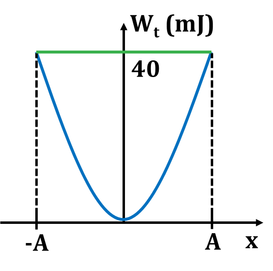

PHẦN II. Câu trắc nghiệm đúng sai
Trong mỗi ý a), b), c), d) chọn Đúng hoặc Sai. Đúng 1 ý: 0,1 · 2 ý: 0,25 · 3 ý: 0,5 · 4 ý: 1,0 điểm.
1
Biết phương trình li độ của một vật có khối lượng 0,2 kg dao động điều hòa là: $x=5\cos(20t)$ cm.
a) Cơ năng của vật là 40 J.
b) Biểu thức động năng và thế năng lần lượt là: $W_đ=\frac{1}{2}m\omega^{2}A^{2}\sin^{2}(\omega t+\varphi)=0,1\sin^{2}(20t)$ (J) và $W_t=\frac{1}{2}m\omega^{2}A^{2}\cos^{2}(\omega t+\varphi)=0,1\cos^{2}(20t)$ (J).
c) Thế năng của con lắc tại thời điểm 2 giây là 17,79 J.
d) Vật có vận tốc cực đại là $20\sqrt{10}$ cm/s.
2
Một con lắc đơn có khối lượng vật nặng 200 g, dây treo có chiều dài 100 cm. Kéo con lắc ra khỏi vị trí cân bằng một góc $60^{\circ}$ rồi buông ra không vận tốc đầu. Lấy $g = 10$ m/s$^2$.
a) Chu kì dao động của con lắc là 0,316 s.
b) Cơ năng của con lắc là 1 J.
c) Thế năng của vật tại vị trí dây treo hợp với phương thẳng đứng góc $30^{\circ}$ là 0,5 J.
d) Động năng của vật tại vị trí dây treo hợp với phương thẳng đứng góc $30^{\circ}$ là 0,5 J.
3
Con lắc lò xo gồm vật nặng khối lượng 300 g, dao động điều hòa trên quỹ đạo dài 20 cm. Trong khoảng thời gian 6 phút, vật thực hiện được 720 dao động. Lấy $\pi^{2}=10$. Mốc thế năng ở vị trí cân bằng.
a) Biên độ dao động của vật 0,1 cm.
b) Chu kỳ dao động của vật 0,5 s.
c) Cơ năng của con lắc 0,2 J.
d) Động năng của con lắc biến thiên với chu kì 0,25 s.
4
Biết phương trình li độ của một vật có khối lượng 0,2 kg dao động điều hòa là: $x=5\cos(20t)$ cm.
a) Trong mỗi giây vật thực hiện được 20 dao động
b) Cơ năng của vật là 40 J
c) Thế năng của vật tại thời điểm 2 s là 0,04 J
d) Khi li độ của vật là 3 cm động năng của nó là 0,036 J
5
Một vật có khối lượng m = 1 kg, dao động điều hoà với chu kì T = 0,2π (s), biên độ dao động bằng 2 cm.
a) Tần số góc của vật dao động là 10 rad/s
b) Cơ năng dao động của vật là 0,02 J
c) Trong quá trình dao động, động năng giảm dần, thế năng tăng dần
d) Khi động năng của vật là 0,005 J thì thế năng của vật là 0,015 J
6
Đồ thị hình vẽ mô tả sự thay đổi thế năng theo li độ của quả cầu có khối lượng 0,4 kg trong một con lắc lò xo treo thẳng đứng.

a) Cơ năng của con lắc lò xo W = $W_{tmax}$ = 40 J
b) Vận tốc cực đại của quả cầu: $v_{max}=\frac{1}{\sqrt5}$ (m/s)
c) Động năng của lò xo khi quả cầu ở vị trí có tốc độ 20 cm/s: $W_đ$ = 4 mJ
d) Thế năng của lò xo khi quả cầu ở vị trí có tốc độ 20 cm/s: $W_t$ = 32 mJ.
7
Cho con lắc lò xo dao động trên mặt phẳng nằm ngang không ma sát như trong hình. Con lắc lò xo thực hiện mỗi dao động mất $2,4\,s$. Tại $t=0$, vật bắt đầu dao động từ chỗ cách vị trí cân bằng $x=3\text{ cm}$.

a) Chu kì dao động của con lắc là 24 s .
b) Tại thời điểm $t=0,6\,s$ vật đang ở VTCB.
c) Tại $x=1,5\left( \text{ cm}\right)$ vật có động năng bằng 3 lần thế năng.
d) Thời gian kể từ lúc bắt đầu dao động đến lúc vật đi qua vị trí có li độ $x=1,5\sqrt{2}\left( \text{ cm}\right)$ lần thứ 2015 là $2417,1\,s$.